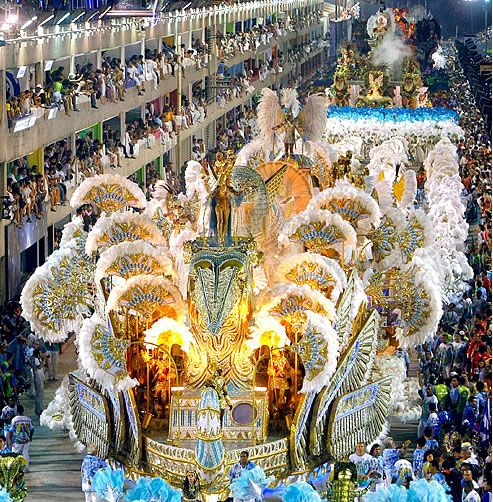
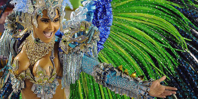
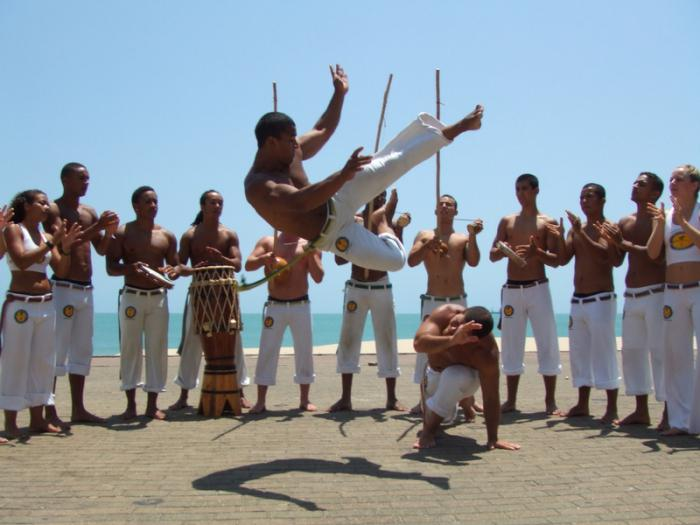

Much of Brazil's international reputation is centered around local traditions and celebrations such as capoeira, the national sport, and the festivities of Carnaval. From the cult of soccer to Catholic holidays to the rituals of the local religion, Candomble, Brazil's traditions are both secular and sacred. In some cases, such as in the earthy revelry of Carnaval, the division seems all but clear.
Brazil's Carnaval
Carnaval, the traditional festival of decadence before Lent begins, has some of its biggest celebrations in Brazil. The cities of Rio de Janeiro and Salvador are particularly famous for their parades; the performers spend months preparing and practicing. During the two weeks immediately preceding the festival, local community bands play throughout Rio's neighborhoods. The informal pre-festival celebrations are known as "blocos." They are very easy to attend and usually take place on the streets in front of bars. Fancy balls take place throughout the city's upscale venues. The Copacabana Palace Ball is the crown jewel of these parties. In the streets, visitors watch the Samba School Parade from Sunday night through Monday morning. Major streets close to traffic throughout the Carnaval festivities.


National Traditions
Besides the country's animated festivals and celebrations, Brazil has numerous traditions, from sports to dance to religious rites. Capoeira, a home-grown martial art, is based on self-defense practices devised by African slaves. Because it was originally necessary to disguise the practice, the art now resembles dancing as much as fighting. Brazil's enthusiasm for soccer launches the sport to the level of a national obsession. Other national traditions draw from the predominant religions, Catholicism and Candomble. Candomble traditions include offerings to Lemanja during the new year, as well as Boa Morte, or beautiful death, a celebration that takes place in Salvador and incorporates music and dance. Samba music and dance comes from the Bantu who arrived in Brazil from Angola. This African musical import has evolved to produce Bossa Nova and other traditional forms of Brazilian music.
Capoeira

Candomble
Candomblé (Portuguese pronunciation: [kɐ̃dõmˈblɛ], "dance in honour of the gods") is an Afro-Brazilian religious tradition, practiced mainly in Brazil by the povo de santo ("people of saint"). Candomblé originated in Salvador, Bahia at the beginning of the 19th century, when the first temple was founded.